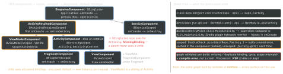

cross-platform · folio
In one line: Dagger turns @Inject/@Provides/@Binds into a dependency graph checked
at compile time and emits plain factory code — no reflection. Hilt fixes the component tree
to Android lifetimes: a binding lives in one component, is visible to that component’s
children, and a scope annotation means “one instance per component instance”.
Download PDF Print view LaTeX source


Binding sources
@Inject constructor— your own classes; prefer it.@Provides— code for types you don’t own (Retrofit, Room builder).@Binds— abstract, no body, interface → impl, cheapest (no module instance).@Module @InstallIn(X::class)decides the component (and so who can see it and how long a scoped instance lives). A scope on a binding must match its component.- Qualifiers for two bindings of one type:
@Named("auth")or a custom@Qualifier annotation class; built-ins@ApplicationContext,@ActivityContext. - Multibindings:
@IntoSet/@ElementsIntoSet→Set<T>;@IntoMap+@StringKey/@ClassKey/custom@MapKey→Map<K, V>orMap<K, Provider<V>>;@Multibindsdeclares a possibly empty one. Plug-ins, interceptors, initialisers. Provider<T>:get()each call (new if unscoped).Lazy<T>(dagger.Lazy): built on firstget(), then cached per Lazy. Both defer work and break a cycle.
Example
@Qualifier annotation class Auth
@Module @InstallIn(SingletonComponent::class)
abstract class DataModule {
@Binds abstract fun repo(impl: NoteRepoImpl): NoteRepo
@Binds @IntoSet abstract fun log(i: LogInterceptor): Interceptor
companion object {
@Provides @Singleton @Auth
fun ok(set: Set<@JvmSuppressWildcards Interceptor>) =
OkHttpClient.Builder().apply { set.forEach(::addInterceptor) }.build() } }
@HiltViewModel(assistedFactory = NoteVM.Factory::class)
class NoteVM @AssistedInject constructor(@Assisted val id: Long,
repo: NoteRepo, heavy: Lazy<Parser>) : ViewModel() {
@AssistedFactory interface Factory { fun create(id: Long): NoteVM } }
// Compose: hiltViewModel<NoteVM, NoteVM.Factory> { it.create(id) }Traps
- Scoping “for performance” — a scope is a lifetime + a lock, not a speed-up.
Set<Interceptor>in Kotlin needs@JvmSuppressWildcards, or MissingBinding.- Plain unit tests need no Hilt — call the
@Injectconstructor with fakes.
Remember: Inject constructors, Bind interfaces, Provide the rest · install decides visibility · scope = one per component.
Assisted injection & entry points
@AssistedInjectmixes runtime values (@Assisted id) with graph deps via a generated@AssistedFactory; VMs:@HiltViewModel(assistedFactory = …)(Dagger 2.49). Assisted values are not saved on process death — nav args go inSavedStateHandle.@EntryPoint= a door into the graph for what Hilt can’t construct (ContentProvider, library callbacks):interface E { fun repo(): Repo }+EntryPointAccessors.fromApplication(ctx, E::class.java).repo().
Testing
@HiltAndroidTest+@get:Rule val hilt = HiltAndroidRule(this)(first rule) +hilt.inject(),HiltTestApplication; a fresh SingletonComponent per test.- Per class:
@UninstallModules(NetModule::class)+ a nested test module. Whole source set:@TestInstallIn(replaces = [NetModule::class], …). One field:@BindValue @JvmField val api: Api = FakeApi().
Koin vs Hilt
Koin: module { single { Repo(get()) }; viewModel { VM(get()) } }, resolved at runtime: fast builds, KMP-ready, a missing binding crashes on first use (verify() test; Koin Annotations add KSP checks). Hilt: compile-time, Android/JVM only.
Errors you will read
[Dagger/MissingBinding] X cannot be provided without an @Inject constructor or an @Provides-annotated method— wrong component/qualifier, no@Binds.[Dagger/IncompatiblyScopedBindings](@Singleton→@ActivityScoped);[Dagger/DependencyCycle]→Provider/Lazy.- “Hilt Activity must be attached to an @HiltAndroidApp Application” — no
android:name.